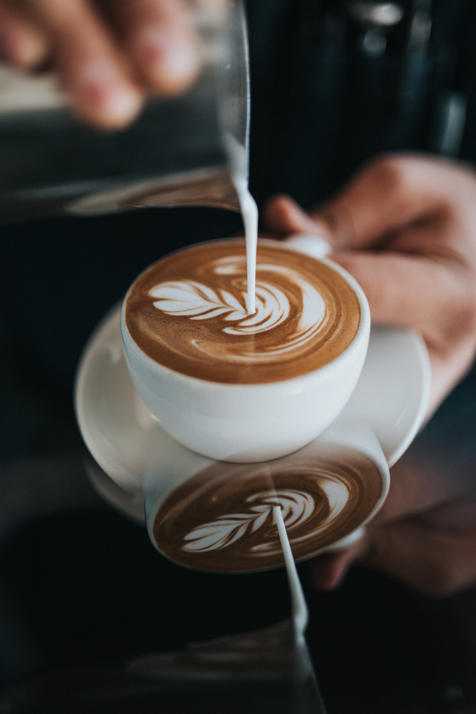

Me? What about?
Oh, that. I love coffee. I loove love cofee.
In fact, I am bananas about coffee, crazy about dancing and enthusiastic about excercise. I have my morning runs every weekday, after which I dance through some calisthenic workouts as I listen to my favourite radio show; classic 105. Surely you can guess what I take after that.

I am a tech fanatic, currently taking a Bsc. Miomedical engineering degree at Kenyatta University in Kenya. I'm also a self taught electronics tecnician, running a part-time service business for repair and maintenance of mobile phones, laptops and desktop computers.
Well, I also really like to get to the bottom of things with kitchenware if you know what I mean. It's such 'arommantic' moments that I live for.
I'd love to hear from you
Back